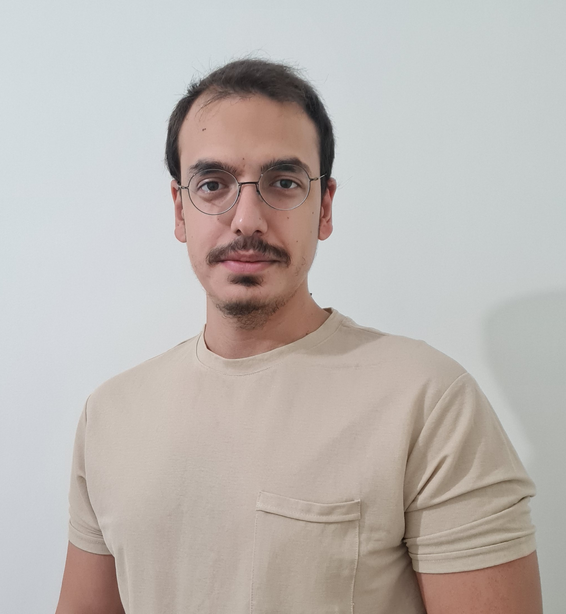
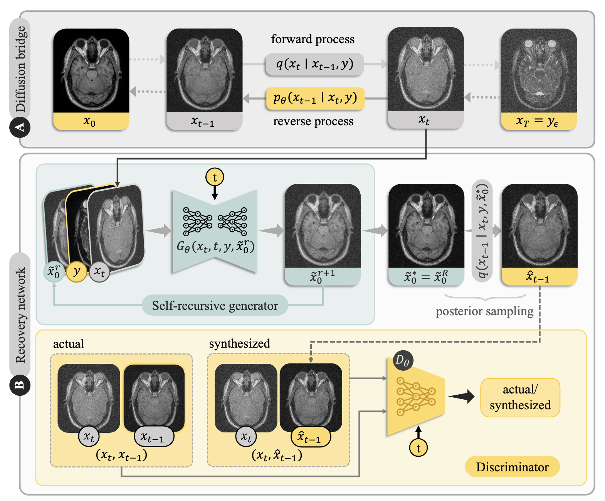
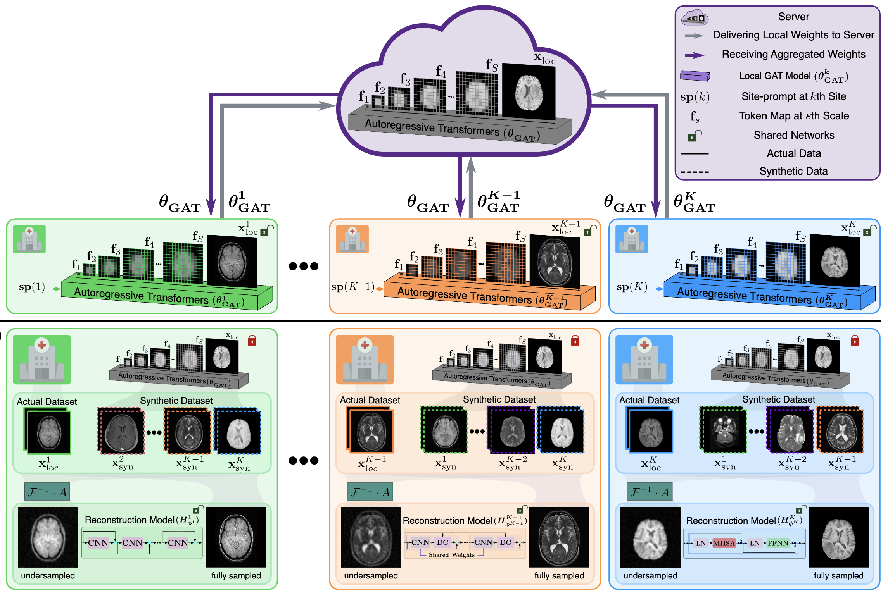
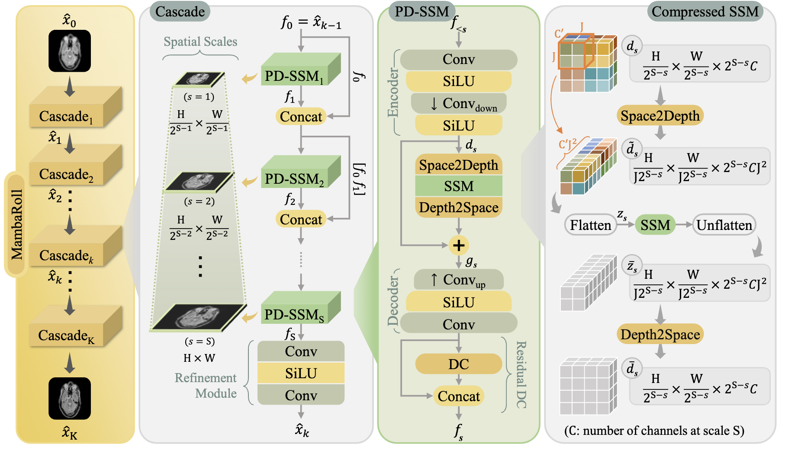
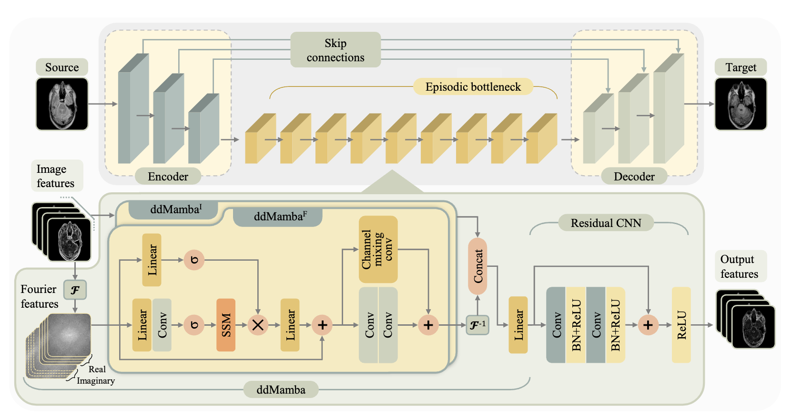
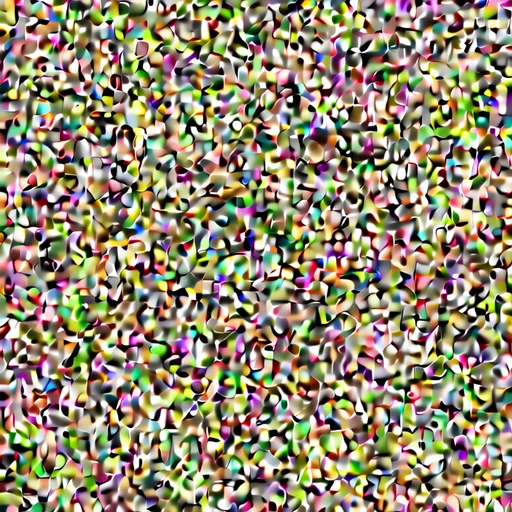

Fuat Arslan
About Me
Hi, I’m Fuat — a researcher, dreamer, and builder of intelligent machines that help doctors see the . I’m currently pursuing my PhD in Electrical Engineering at StanfordUniversity, where I study how to make AI systems not just smart, but trustworthy. My work lives at the intersection of mathematics, deep learning, and medical imaging — creating models that can actually make sense in a hospital, not just on a benchmark.
Research Interests
- Diffusion and generative modeling
- Medical imaging and physics-informed AI
- Agentic and human-in-the-loop learning
- Trustworthy and reliable AI systems
Education
Ph.D., Electrical Engineering
Stanford University
M.Sc., Electrical & Electronics Engineering
Bilkent University · CGPA: 4.00/4.00
B.Sc., Electrical & Electronics Engineering
Bilkent University · CGPA: 3.88/4.00
Selected Publications

F. Arslan, B. Kabas, O. Dalmaz, M. Ozbey, T. Çukur
Medical Image Analysis (MEDIA), 2025 (in press)
[arXiv] · [GitHub]

V. A. Nezhad, G. Elmas, B. Kabas, F. Arslan, T. Çukur
arXiv:2502.04521, 2025
[arXiv] · [GitHub]

B. Kabas, F. Arslan, V. A. Nezhad, S. Ozturk, E. U. Saritas, T. Çukur
arXiv:2412.09331, 2025
[arXiv] · [GitHub]

O. F. Atli, B. Kabas, F. Arslan, M. Yurt, O. Dalmaz, T. Çukur
arXiv:2405.14022, 2024
[arXiv] · [GitHub]
Full list available on Google Scholar.
Beyond Academia
I’ve trained in many styles — kickboxing, Wushu, Wing Chun, and now Kali Eskrima. What keeps me in it isn’t philosophy or discipline; it’s the feeling itself.
Harnessing Chaos
There is nothing particularly meaningful about this noise. At least, not to you or me.
Yet it could be the beginning of something beautiful. Or perhaps just more noise.

What makes the difference is neither the beginning nor the end alone, but the path and every step along it.
Mathematics gives us the power to harness chaos. That is what fascinates me about generative modeling.
Perhaps life is not so different.
Perhaps this website is just an initial distribution, too. Who knows what it will become?